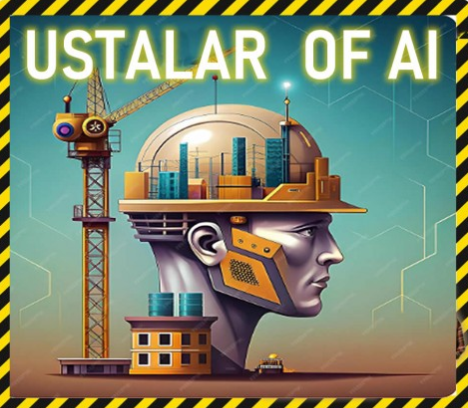

Ustalar.com'a Git
Ustalar.com'a Git
İnşaatın A'dan Z'ye tüm süreçlerinde akıllı çözümler üreten yapay zeka asistanınız.
İMALATTAN SATINALMAYA,
EN İDEAL ÇÖZÜMLER TEK PLATFORMDA!

Taleplerinizi analiz eder, en doğru çözümleri sunar.
İmar, maliyet, zaman ve kaynak planlamanızı kolaylaştırır.
En uygun ürün, tedarikçi ve fiyat seçeneklerini belirler.
Şantiye süreçlerinizi anlık takip eder, riskleri önceden öngörür.
Finansal analiz, raporlama ve performans ölçümünü otomatikleştirir.